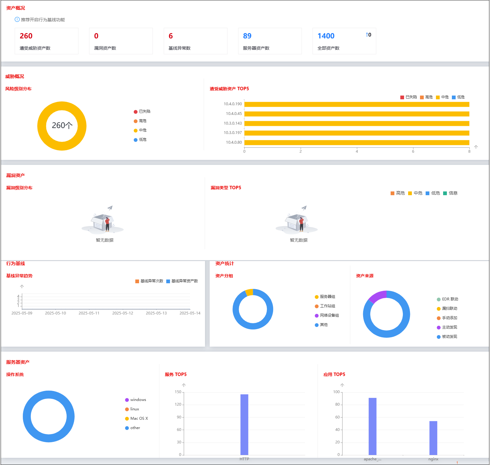
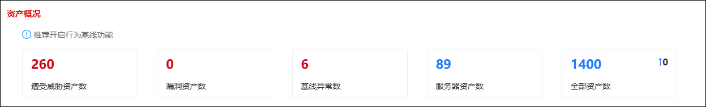
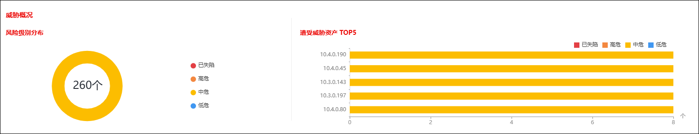
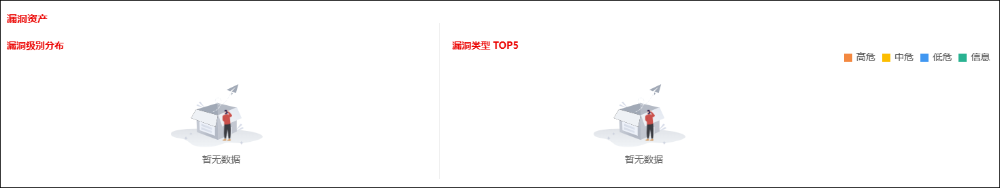
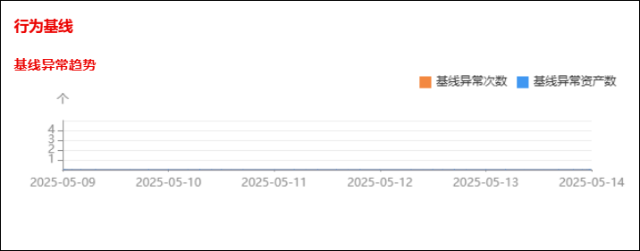
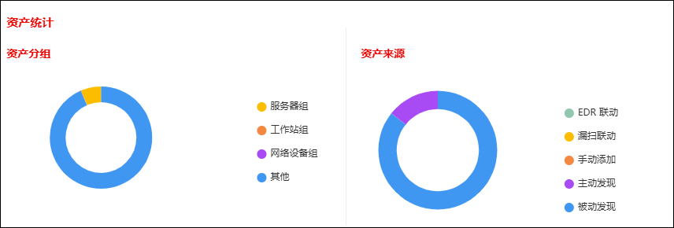
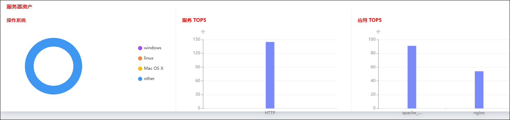

资产总览界面以各类图表向管理员展示了受NGFW管理的各类资产的数量、类型和安全状态，从而帮助管理员更好的掌握内网安全状态。
选择 安全中心 > 资产管理 > 总览，界面如下图所示。

下面进行各个模块的介绍。
·资产概况

资产概况模块介绍了受NGFW管理的所有资产的情况，详细内容包括遭受威胁资产数、漏洞资产数、基线异常数、服务器资产数和全部资产数。
·威胁概况

威胁概况模块介绍了受管控资产的威胁概况，内容包括风险资产的风险级别分布以及遭受影响最严重得（即威胁数最多的）Top5资产。
·漏洞资产

漏洞资产模块介绍了受管控资产的漏洞概况，内容包括漏洞的级别分布以及出现次数Top5的漏洞类别。
·行为基线

行为基线模块展示了近期行为基线变化的趋势。
·资产统计

资产统计模块展示了受管控资产的类别和来源，详细信息包括资产类别分组和资产来源分组。
·服务器资产

服务器资产模块展示了服务器类别资产的状态，详细信息包括操作系统类型分布、Top5服务和Top5应用。